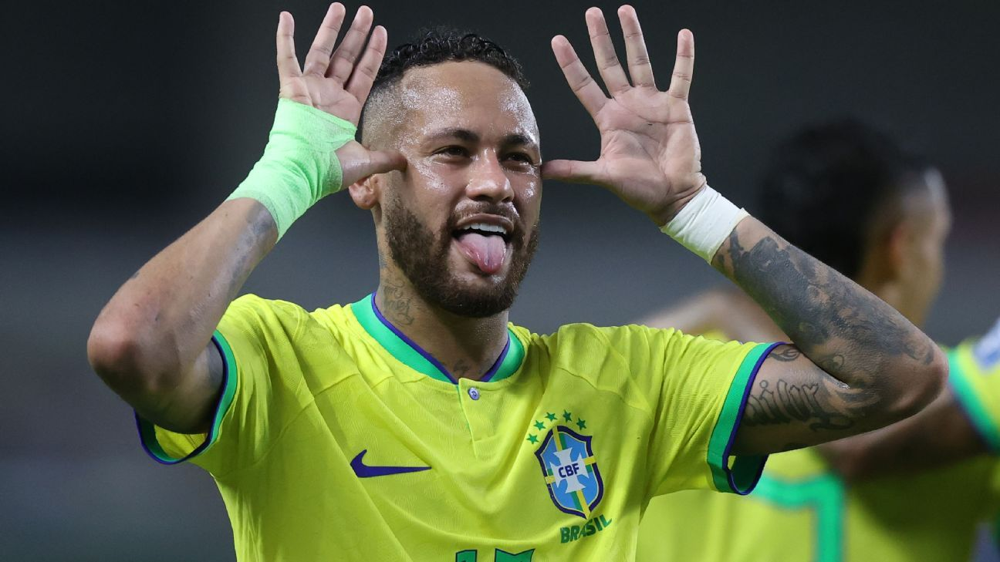

Dê um hype na página para ajudar na divulgação!!!
Copa 2026
Por: Manoella Amabile
Boas-vindas ao meu novo site! mostramos noticias verdadeiras e confiaveis!!!!! Especialista Enzo Nubenlk afirma em seu blog de 10 milhoes de inscritos que copinha CEAG tem o mesmo peso da copa mundial. Confira: https.futnews.oficial.com

Resultado do Último Jogo Choca Brasileiros 2026
Por: Ramom Camargo
RESULTADO DO ÚLTIMO JOGO DA COPA!!!!! Brasil ganha de Alemanha de 7x1 com jogadores utilizando biquíni de uniforme. Brasileiros estão alegres e fazem festa de biquíni.
JOGO DA COPA FOI CANCELADO!!!!
Por: Luis Vigoto
Brasileiros invadem e causam danos ao estádio, pois, não convocaram o jogador 'Pai do Bebe'. Estado Americano suspende os jogos por uma semana para consertar estragos causados pelos torcedores.